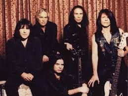

Biografía
Dio fue una banda estadounidense de heavy metal formada en 1982 por el vocalista Ronnie James Dio tras su salida de Black Sabbath. La banda es conocida por su estilo potente, voces agudas y letras que combinan fantasía, mitología y temas épicos. Su álbum debut, Holy Diver (1983), se convirtió en un clásico del metal, destacando canciones como “Holy Diver” y “Rainbow in the Dark”. A lo largo de los años, Dio se consolidó como un referente del metal tradicional, influenciando a numerosas bandas y manteniendo la reputación de Ronnie James Dio como uno de los mejores vocalistas del género.
Información detallada
- Origen: Estados Unidos
- Año de formación: 1982
- Género: Heavy Metal / Metal Tradicional
- Fundador / Vocalista principal: Ronnie James Dio
- Guitarristas destacados: Vivian Campbell, Craig Goldy
- Bajistas destacados: Jimmy Bain
- Álbumes icónicos: Holy Diver (1983), The Last in Line (1984), Sacred Heart (1985), Dream Evil (1987)
- Logros: Reconocida como una de las bandas más influyentes del metal tradicional, mantuvo un legado duradero gracias a la voz y carisma de Dio
- Estilo musical: Voces potentes y melódicas, riffs pesados, solos virtuosos y letras épicas con temáticas de fantasía y heroísmo
